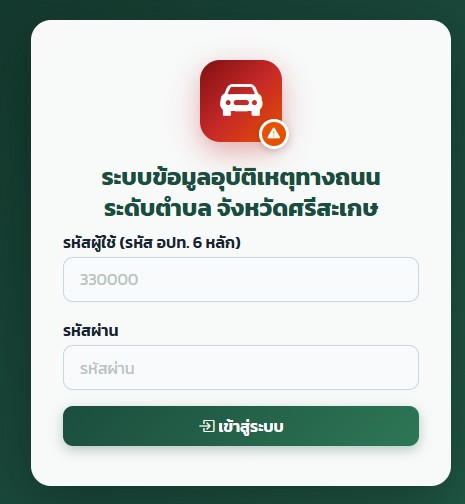

หน่วยงานที่สนับสนุน
รวบรวมและวิเคราะห์ข้อมูลอุบัติเหตุทางถนนระดับตำบล บูรณาการ 3 ฐานข้อมูล จังหวัดศรีสะเกษ
ระบบบูรณาการข้อมูลอุบัติเหตุทางถนน 3 ฐาน (ตำรวจ · โรงพยาบาล · ประกันภัยกลาง) ระดับตำบล ครอบคลุม 216 ตำบล 22 อำเภอ รองรับ PDPA พัฒนาด้วย Google Apps Script

แบบฟอร์มบันทึกข้อมูล
รายงานข้อมูลและสถิติ
จัดการข้อมูลอุบัติเหตุ
ตำบลจะมีข้อมูลในการแก้ไขปัญหา
การรณรงค์ความปลอดภัยทางถนน